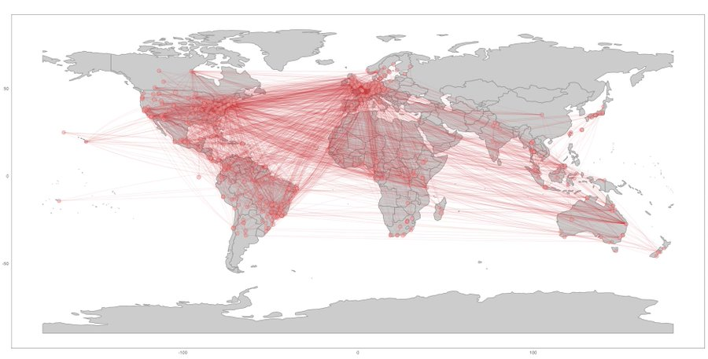

refsplitr: author name disambiguation, author georeferencing, and mapping of coauthorship networks with Web of Science data.
refsplitr (v1.0) is an R package to parse and organize reference records downloaded from the Web of Science citation database, disambiguate the names of authors, geocode their locations, and generate/visualize coauthorship networks. The Web of Science (WOS) is a toll-access literature and citation database maintained by Clarivate Analytics that indexes articles from ~12,000 academic journals. WOS records include a diversity of data about each article (e.g., article title, journal name, author names, author addresses, number of times the article has been cited, funding sources), making them very useful for studying patterns of scientific productivity, coauthorship, research impact, and other Science of Science topics. Because bulk WOS records and API access to the WOS are very expensive, researchers at WOS-subscribing institutions often gather data by conducting WOS searches and downloading reference records in batches. However, this requires a cumbersome process of extracting, merging, and correcting data from the downloaded records prior to conducting any analyses. refsplitr will rapidly merge and process reference data files downloaded from the WOS, and then process and organize them in a format amenable for use in scientometric, social network, and Science of Science analyses.
Support for the development of refsplitr was provided by grants from the University of Florida Center for Latin American Studies and the University of Florida Informatics Institute.
Installation
You can install the development version from GitHub with:
# install.packages("devtools") devtools::install_github("ropensci/refsplitr")
Workflow
There are four steps in the refsplitr package’s workflow:
- Importing and tidying Web of Science reference records
- Author name disambiguation and parsing of author addresses
- Georeferencing of author institutions
- Data visualization
This is done using a series of simple commands; an example of this simple workflow is provided below:
# load the Web of Science records into a dataframe dat1 <- references_read(data = system.file("extdata", "example_data.txt", package = "refsplitr"), dir = FALSE) # load the Web of Science records into a dataframe dat1 <- references_read(data = system.file("extdata", "example_data.txt", package = "refsplitr"), dir = FALSE) # disambiguate author names and parse author address dat2 <- authors_clean(references = dat1) # after revieiwng disambiguation, merge any necessary corrections dat3 <- authors_refine(dat2$review, dat2$prelim) # georeference the author locations dat4 <- authors_georef(dat3) # generate a map of coauthorships; this is only one of the five possible visualizations plot_net_address(dat4$addresses)
We welcome any suggestions for package improvement or ideas for features to include in future versions. If you have Issues, Feature Requests and Pull Requests, here is how to contribute. We expect everyone contributing to the package to abide by our Code of Conduct.

Contributors
- Auriel Fournier, Porzana Solutions
- Matt Boone, Porzana Solutions
- Forrest Stevens, University of Louisville
- Emilio M. Bruna, University of Florida
Citation
Auriel M.V. Fournier, Matthew E. Boone, Forrest R. Stevens, and Emilio M. Bruna Developer (2020). refsplitr: author name disambiguation, author georeferencing, and mapping of coauthorship networks with Web of Science data. R package version 1.0.0. https://github.com/ropensci/refsplitr
@Manual{,
title = {refsplitr: author name disambiguation, author georeferencing,
and mapping of coauthorship networks with Web of Science data.},
author = {Fournier, Auriel M.V., Matthew E. Boone, Forrest R. Stevens, and Emilio M. Bruna},
year = {2020},
note = {R package version 1.0.0.},
url={https://github.com/ropensci/refsplitr},
}Note regarding package development history: The early development of refsplitr- initially known as refnet - was by Forrest Stevens and Emilio M. Bruna and was done on r-forge. In December 2017 Bruna moved it to Github and hired Porzana Solutions to finalize the package and prepare it for submission to CRAN. Please make all suggestions for changes via this Github repository - do not make a repo mirror of the R-forge version.